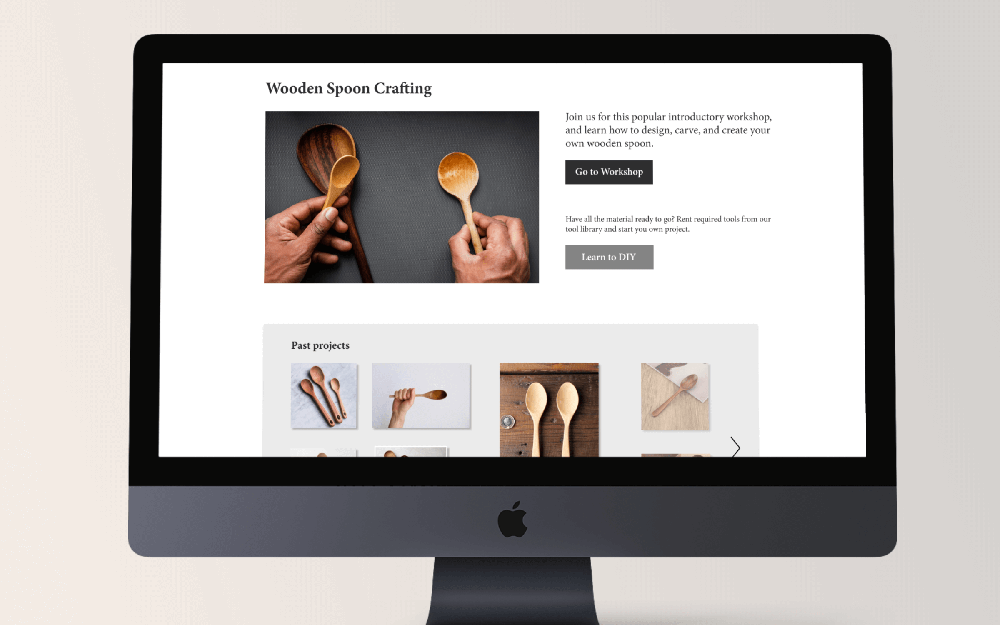
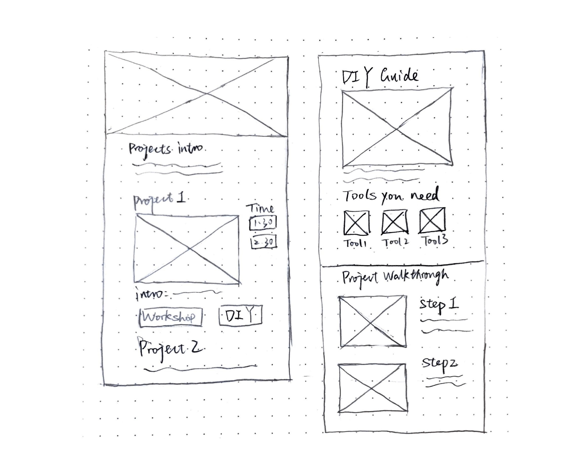

<!DOCTYPE html>
<html lang="en">
<head>
    <meta charset="UTF-8">
    <meta name="viewport" content="width=device-width, initial-scale=1.0">

    <link href="https://fonts.googleapis.com/css?family=Open+Sans&display=swap" rel="stylesheet">
    <link rel="stylesheet" type="text/css" href="css/style.css">
    <link rel="stylesheet" type="text/css" href="css/project-style.css">
    <title>Lucio's Portfolio</title>
</head>

<body>

    <header id="main-header">
		<a href="index.html"> 
		</a>
	</header>
    
	<nav id="navbar">
		<ul>
			<li id="nav-projects"><a href="index.html">Projects</a></li>
			<li><a href="about.html">About</a></li>
			<li><a href="#">Contact</a></li>
		</ul>
	</nav>

    <div class="project-container">
        
        <h1>UI/UX design: Tool library showcase</h1>
        <p>The Tool library showcase is a platform for the Vancouver tool library to show its featured projects to educate members tool literacy. 
            It provides two ways to engage members to learn the project: instruction from workshops and DIY instructions on how to replicate these projects. 
            <br><br>
            In this project, I rely heavily on implementing research tools to develop our understanding of the clients. 
            Finally, we come up with a design solution to tackle the problem this organization is facing with.</p>
            
        <br>
        

        <div class="boxof2">
            <h2>Role</h2>
            <ul>
                <li>User research</li>
                <li>UX design</li>
                <li>Graphic design</li>
                
            </ul>
        </div>

        <div class="boxof2">
            <h2>Context</h2>
            <p>Course project: Interaction Design Methods (2020) <br>
                Group with Caleb, T., Dawood, S., and Fatima, I.</p>
        </div>
        
        <h2>Our client</h2>
        <p>The Vancouver tool library strives to make Vancouver more sustainable through lending out tools. They also hold workshops like woodworking and leatherworking.

                Its goal is to engage more people in tool lending and project making to keep people interested in this organization.
        </p>
        


        <h2>Research</h2>
        <p>In the beginning of our research, I touch base this organization by in-personal interviews with the manager and volunteers, know the basic of how it runs and get basic demongraphic data of the members. 
            The findings are summarized in weekly poster to present in the class.
        </p>

        <h3>User journey map highlight</h3>
        

        <h2>Initial design focus</h2>
        <p>From the research, we found a large amount of tool library members are not so experience on using tools and doing projects. It raised our concern of their safety and tool maintenance. 
            Therefore, we chose our design focus as: Creating a smooth tool renting experience that ensures the safety of the customer and the condition of the tool for new / amateur users.  
        </p>

        <h2>Participatory Workshop</h2>
        <p>In this session, I practiced workshop activities to stimulate participants’ creativity to co-create with us. (Due to the influence of COVID-19, the workshop was held online)
            I took part in designing the workshop workflow. It contains 5 activities, including brainstorm, conversation starter, drawings of idea solution and so on. <br><br>
            
            The takeaways from this workshop are suggestions of a way to educate amateur members to practice more project with tools. Also, we learned that the tool safety from initial focus should be avoid because it will become liability.
        </p>
        <h3>Participatory workshop on Google Doc</h3> <br>
        

        <h2>Final design focus</h2>
        <p>After the workshop, we re-direct our design focus as: <br>
            <b>Enhance new and amateur member’s tool literacy through workshop engagement and projects. </b>
            We finally chose the solution of a online showcase to better target amateur members in the tool library. We choose website as a platform because it is easy and engaging for these people.
        </p>

        <h2>Design process</h2>

        <h3>Website layout sketch</h3>
        

        <h3>Iterations of the project showcase section</h3>
        

        <h2>Final design (Role: Graphic design)</h2>
        <h3>Main page</h3>
        

        <h3>DIY walkthrough</h3>
        


        <h2>Conclusion</h2>
        <p>Overall, during this term-long project, many research tools (interview, participatory workshop) gave me a better sense of how to study an organization and conduct user research. Besides, coming up with tne final solution requires a strong design thinking, which leads us to a suitable and feasible solution for the organization.
        </p>

        <h2>Reflection</h2>
        <p>The relationship between “Workshop” and “DIY” pages are not very strong, they should have some interaction within the content to make them more integrated as two main features in the website. Going forward, I need to re-structure the content of these two pages to find out their similarity and connect them in a proper way.
        </p>

    </div>

    

    <footer id="main-footer">
		<a href="mailto:luciochen79@gmail.com" class="email-link">luciochen79@gmail.com</a>

		<script src="https://kit.fontawesome.com/1c90995e4d.js" crossorigin="anonymous"></script>
		<ul class="social-media">

			<li><a href="https://www.facebook.com/chen.lucio.9">	<i class="fab fa-facebook-square"> </i></a></li>
			<li><a href=""> <i class="fab fa-linkedin"></i></a></li>
		</ul>
        
        <p>
			Web design and contents &copy 2020, Lucio Chen
		</p>

	</footer>
    


</body>
</html>